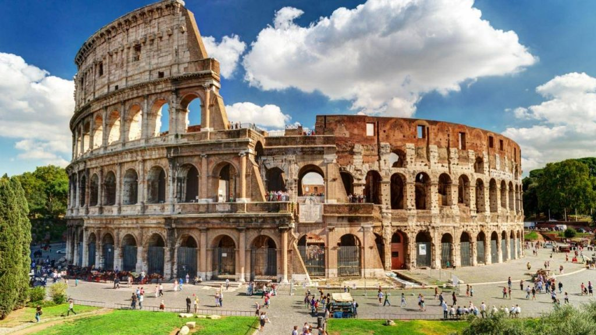
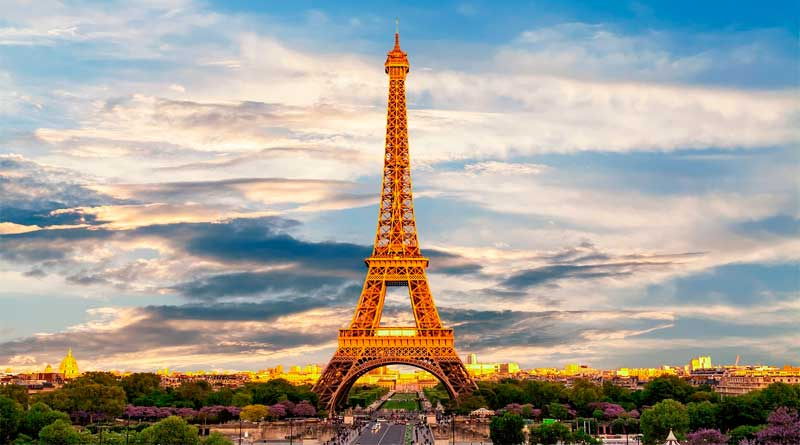
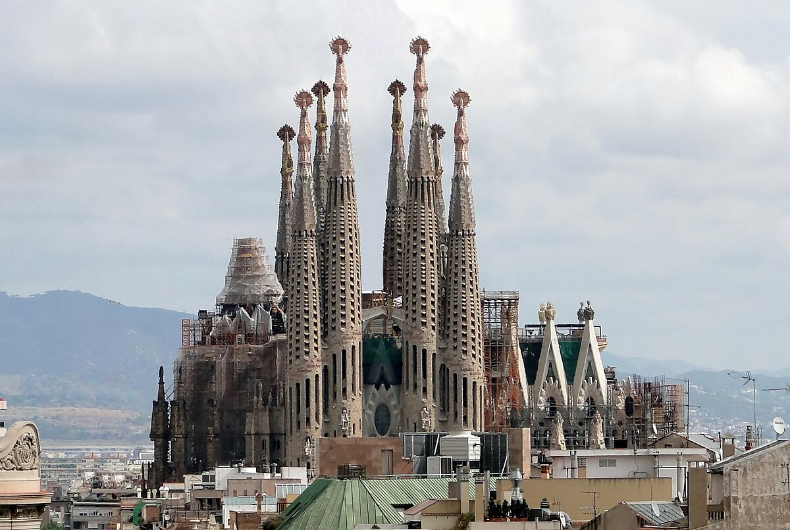
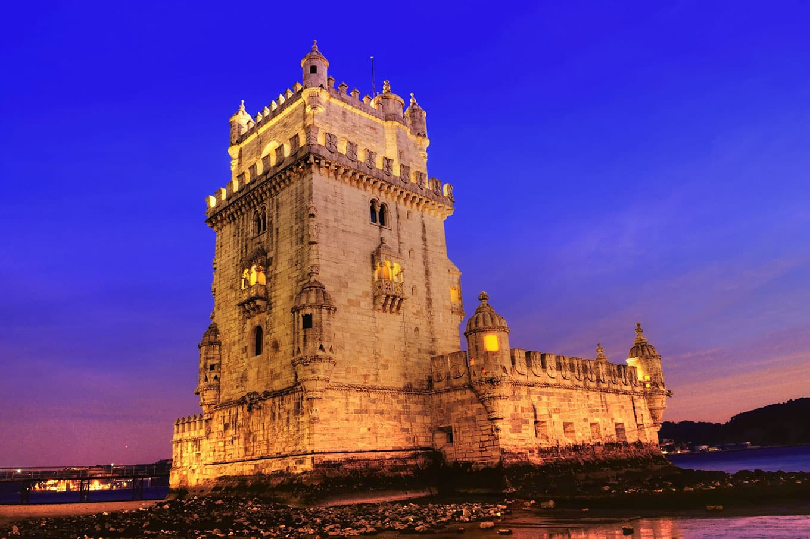

Itália: Coliseu de Roma
O principal ponto turístico da Itália é sem dúvida o Coliseu de Roma. É um dos monumentos mais famosos do mundo e atrai nada menos do que 4 milhões de turistas todos os anos. Sua construção se iniciou no ano de 72 d.C. e durante décadas, serviu de palco para gladiadores que lutavam entre si ou com animais para um público de mais de 70 mil romanos.
França: Torre Eiffel em Paris
É claro que a Torre Eiffel de Paris não poderia estar fora dessa lista. Construída em 1889, ela conta com 325 metros de altura e 1.665 degraus, e você não pode deixar de visitá-la quando estiver em Paris. Vista de diversas partes da capital francesa, a Torre Eiffel é um marco de como um monumento pode tornar-se um símbolo de uma nação.
Espanha: Sagrada Família em Barcelona
Os principais pontos turísticos de Barcelona e da Espanha foram construídos pelo famoso arquiteto Antoni Gaudì. A principal obra e o ponto turístico mais famoso que ele construiu é a Sagrada Família de Barcelona, uma igreja com uma grandeza incomparável e que ainda não está acabada, pela enorme quantidade de detalhes e pelo tamanho que foi projetada.
Inglaterra: Torre Big Ben de Londres

Outro ponto turístico famoso e um dos símbolos da Europa é o Big Ben de Londres. É no Big Ben que está instalado o parlamento inglês e é parada obrigatória para qualquer turista que visita a cidade de Londres e a Inglaterra, independente da época.
Portugal: Torre de Belém em lisboa
A Torre de Belém fica em lisboa e é considerada o principal ponto turístico de Portugal e um dos mais visitados da Europa. A Torre de Belém em lisboa foi construída na era de ouro de Portugal, época das navegações, com o objetivo de proteger a cidade de invasores.